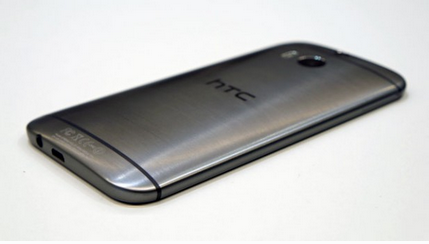

How to enable or disable safe mode in HTC one M8: Easy Way
HTC One M8 is a premiere smartphone from HTC that delivers the best performance and class apart features as compared to most of the latest Android Smartphone's available out there in the market.